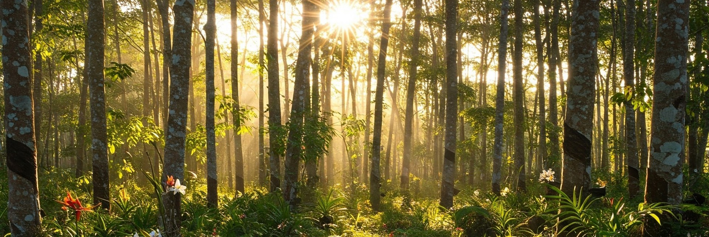

Produce robust and actionable scientific knowledge; promote environmentally and economically sound land use policies.
Projects
Reports and stakeholder engagement.
People
Our team brings deep expertise on assessing land use and land use policy worldwide.
Impact
New insights about how land is used and the environmental and social outcomes; evidence driven policy making about land use.
Our Mission
To advance sustainable land use in commodity production landscapes worldwide by producing robust, relevant, and actionable scientific knowledge and promoting environmentally and economically sound land use policies.

contributing members
Holly Gibbs
Founder
Dr. Holly Gibbs
is a professor at the University of Wisconsin-Madison where she directs a large team of scientists
and students in the
Global Land Use and Environment
(GLUE) Lab. She is a Land System
Scientist who studies how and why people use land around the world and what these changes mean for
the future of our planet.
Google Scholar
Lisa Rausch
Lisa Rausch
Dr. Lisa Rausch
is a scientist in the Center for Sustainability and the Global Environment (SAGE) at the
University of Wisconsin - Madison, where she leads research on drivers of deforestation and the
outcomes of zero-deforestation policies in Latin America for the
Global Land Use and Environment
(GLUE) Lab.
Google Scholar